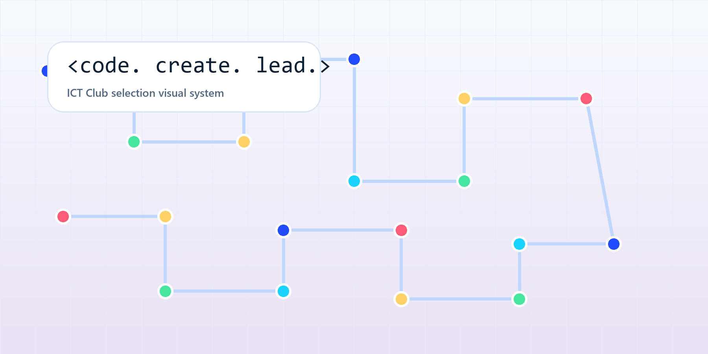

Student Developer + Visual Designer + Club Leader
Zannatul Fardaus Zinia
Building playful learning projects, clean club visuals, and student-led experiences with code, AI tools, design, and confident communication.

Featured Work
Projects that show code, creativity, and presentation power.

Web Game
English Shooter Academy
A browser-based quiz/game experience created to make English learning more active and memorable.
Open live gameClub Branding Kit
Logos, promotional visuals, presentation layouts, and event media for school club activities.
Netlify Game Lab
A second web-game project with its public build currently offline, kept as a project trace.
Visit linkWins + Recognition
A digital archive of medals, crests, competitions, and leadership proof.

ICT Evidence Wall
Actual medals + crests + trophies
 DRMC Sudoku Champion
Logic and competition focus
DRMC Sudoku Champion
Logic and competition focus
 Cricket Champion
Team spirit and performance
Cricket Champion
Team spirit and performance
 Sports First Prize
Inter House Annual Sports
Sports First Prize
Inter House Annual Sports
 School Medal
DCGPSC recognition evidence
School Medal
DCGPSC recognition evidence
 Poem Recitation
Stage confidence and expression
Poem Recitation
Stage confidence and expression
 Bangla Recitation
Cultural Week 2023 recognition
Bangla Recitation
Cultural Week 2023 recognition
 Debating Club
Voice and leadership presence
Debating Club
Voice and leadership presence
Toolkit
What I use to turn ideas into visible work.
Code
HTML, C programming, game logic, quiz structures, and beginner-friendly web ideas.
AI Workflow
ChatGPT, Gemini, Claude, prompt planning, research support, content structure, and rapid ideation.
Design
Canva Pro, posters, logos, brand colors, presentation systems, and club campaign visuals.
Media
CapCut video editing, multimedia presentation flow, event storytelling, and visual polish.
Leadership Timeline
From participation to coordination.
- Language Club President for 2 consecutive years, leading club operations and student teams.
- Inter-Cantonment Debate Selected as the only Bangla Version student to represent the institution in English debate.
- ICT Candidate Running for ICT Club Executive Member with a plan for digital showcases and creative learning.
Portfolio Card
Ready for ICT Club executive selection.
Intermediate 1st Year - Section A - Roll 1017 - Matikata, Dhaka - Blood Group A+